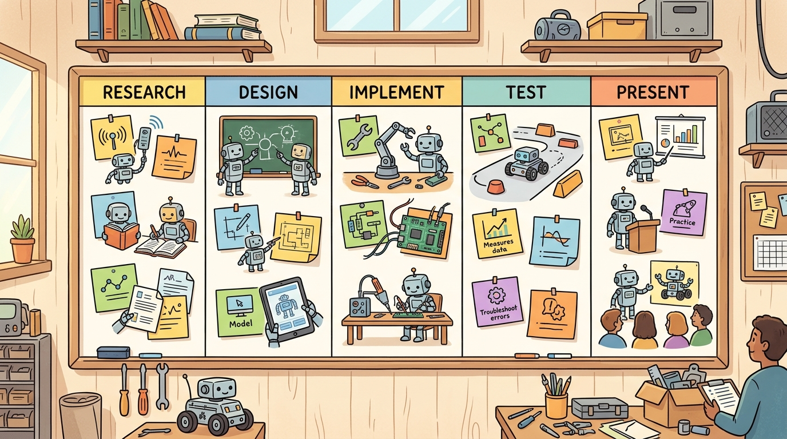

"Fine-tuning made me confident. The baseline made me explain myself."
An Open VLA With A Task Panel

This section assumes familiarity with behavior cloning and the distribution-shift problem from section 21.2, and with the OpenVLA architecture and its action-tokenization scheme from sections 34.3 and 34.5. The action-scale mismatch failure demonstrated here recurs in section 59.5, where sim-to-real transfer introduces a related class of representation-boundary errors, and in section 35.4, where cross-embodiment fine-tuning makes the same dataset-card fields load-bearing at scale.
A robot arm stares at a mug it has never seen before. A foundation vision-language-action (VLA) model, trained on hundreds of thousands of demonstrations, produces a plausible-looking grasp that misses by two centimeters every time. Twenty minutes of your own teleoperated data, fine-tuned with LeRobot, closes that gap. This is the moment embodied AI shifts from "impressive on the benchmark dataset" to genuinely useful on your bench. Pretrained VLAs now exist that understand language and can act, but they have no memory of your gripper, your lighting, or your objects. Fine-tuning is how you close that gap without collecting millions of examples. Here you will record a small dataset, adapt OpenVLA to a custom manipulation task, and build the evaluation discipline to know whether it actually worked.
This section develops the technical contract for Fine-tune an open VLA on a custom task (LeRobot) into a usable mental model. First we define the object of study, then we connect it to the agent loop, then we test it with a compact implementation.
The key question in Fine-tune an open VLA on a custom task (LeRobot) is practical: what must the agent know, what can it observe, what action is available, and what evidence shows that the action worked under the stated conditions?
Open VLA fine-tuning with LeRobot should be judged by the action it improves. A section claim is strong when it names the decision, the measurement, and the failure mode before a larger model or simulator is introduced.
Theory
For Fine-tune an open VLA on a custom task (LeRobot), the practical design rule is to make the interface inspectable before optimization begins: inputs, outputs, units, latency, bounds, and failure labels should all be visible in the saved artifact.
The mechanism in Fine-tune an open VLA on a custom task (LeRobot) is the contract between representation and action. Name what enters the module, what leaves it, which assumptions make that transformation valid, and which log would reveal a bad handoff.
Worked Example
For Fine-tune an open VLA on a custom task (LeRobot), keep one concrete rollout in view. A sensor reading becomes an estimate, the estimate constrains an action, the action changes the world, and the next observation confirms or contradicts the assumption. The section's idea is useful only if it improves that loop.
Use LeRobot, OpenVLA-style checkpoints, ACT or diffusion-policy loaders, and dataset cards for this project. The preserved fields are dataset version, embodiment, camera layout, language command, action representation, fine-tuning config, and held-out rollout label.
Practical Recipe
- Pin the physical contract first: write the camera resolution (e.g., 224x224 center-cropped RGB), control frequency (e.g., 15 Hz for ACT (Action Chunking with Transformers), 30 Hz for diffusion policy), action representation (delta end-effector pose in meters, not joint angles), and gripper-open threshold before selecting any model checkpoint.
- Build a scripted baseline that replays a single teleoperated trajectory; if the robot cannot follow its own recorded actions under position control, the hardware interface is broken and no fine-tuning will fix it.
- Verify action scale before the first training run. Load one batch, decode a predicted token to Cartesian displacement, and confirm it matches the displacement visible in the corresponding camera frame. A 0.02 m step should move the wrist roughly one gripper-width, not half the table. Action scale mismatches cannot be corrected by more training data. A gripper that overshoots by 3 cm on every step will collide with surfaces, damage objects, or trigger safety stops. These failures are invisible in offline loss curves but immediate on hardware. The mechanism is uniform quantization: OpenVLA maps each action dimension to 256 discrete tokens, and each token corresponds to a physical displacement fixed at dataset-collection time. When two datasets assign different physical scales to the same token index, the model learns the correct index but the robot moves the wrong distance by the ratio of the two scales. Fine-tuning on the new dataset does not repair this because the token-to-meters mapping is never part of the gradient.
- Record failures with embodied tags: occlusion (object hidden during grasp approach), contact-rebound (gripper bounces off surface due to stiffness mismatch), action-accumulation (per-step error compounds over a 15-step pick sequence), or reset-distribution drift (object placement at evaluation differs from data collection).
- Run a camera-pose perturbation test before trusting offline accuracy: shift the wrist camera by 5 cm laterally and measure how many rollouts still succeed; a model that memorized pixel positions rather than object geometry will fail this test even at high held-out accuracy.
Think of action tokenization like a measuring cup with fixed graduation marks. If your recipe was written for a cup marked in tablespoons but you grab a cup marked in teaspoons, the number you read off the scale is identical, yet the physical quantity you pour is three times too much. The model learns to predict the correct graduation mark (token index), but the physical amount that pours out depends entirely on which cup was used during data collection. Swapping cups mid-recipe without relabeling everything causes every measurement to be wrong by the same fixed ratio, and no amount of practice with the new recipe corrects it until you re-mark the cup.
The common mistake in Fine-tune an open VLA on a custom task (LeRobot) is to trust a component score before checking the closed-loop interface. The failure usually appears where state, timing, authority, or evaluation context crosses a module boundary.
Students often assume that a rising offline accuracy metric (action-prediction loss on the held-out split) is sufficient evidence that fine-tuning succeeded. This is wrong in the embodied AI context because offline metrics evaluate token predictions in isolation: they cannot detect action-scale mismatches, broken camera calibrations, or reset-distribution drift, all of which produce consistent prediction errors that only become visible during closed-loop execution on hardware. The correct mental model is that offline accuracy is a necessary but not sufficient condition for real-world improvement. A fine-tuned policy must be evaluated with at least one closed-loop rollout on the physical robot before any performance claim is made, and the evaluation script must verify action scale, camera pose, and object placement match the training distribution exactly.
Consider a specific case: a student fine-tunes OpenVLA-7b on 180 towel-folding episodes collected with a Franka Panda at 30 Hz. Offline action-prediction accuracy improves from 62% to 81% on the held-out split. But on hardware the robot overshoots by roughly 3 cm on every grasp. The root cause is action-tokenization scale: the pretrained VLA was trained on a different arm whose end-effector travels 0.05 m per token step, while the Franka dataset was collected at 0.02 m per step. The fine-tuning loss was minimized, but the action representation mismatch was never detected because the offline metric never touched the physical scale. Adding one line to the dataset card, action_scale_m_per_token: 0.02, and retraining with a rescaled action head eliminates the overshoot. This class of failure is invisible to per-step accuracy but obvious in the first hardware rollout. The numbers tell the story plainly: offline accuracy climbed from 62% to 81%, yet every single grasp missed by 3 cm until one dataset-card field was corrected.
A team using Fine-tune an open VLA on a custom task (LeRobot) starts by writing the task panel, not by picking the largest model. They keep a baseline run, a maintained-tool run, and a perturbation run in the same result folder. The comparison is accepted only when the action trace, metric, and failure labels come from one script.
When Fine-tune an open VLA on a custom task (LeRobot) feels abstract, ask what would be different in the next frame of video, the next robot state, or the next safety margin.
For Fine-tune an open VLA on a custom task (LeRobot), the open research question is not whether a larger policy can produce a better demo. The sharper question is whether the method improves reliability across new scenes, new embodiments, delayed feedback, and rare failures under an evaluation protocol that another lab can reproduce.
For Fine-tune an open VLA on a custom task (LeRobot), can you name the observation, action, protected assumption, success metric, and one likely failure case? If any field is vague, rewrite the contract before adding model complexity.
Topic-Native Deepening
This capstone puts the reader directly into the current open robot-foundation-model ecosystem. The value is not just using a modern VLA; it is learning how to define a narrow custom task, prepare the evidence card, and fine-tune without losing sight of action interfaces and evaluation discipline.
A common failure is treating fine-tuning as a black-box recipe. This section instead asks what the dataset, embodiment, and action-tokenization assumptions are, and which metric should prove that task adaptation really happened.
Fine-tune an open VLA on a custom task (LeRobot) becomes teachable once the student can state the operative variables, the decision boundary, and the evidence artifact. The section should therefore be read together with Chapter 34 on VLAs and Chapter 24 on data quality, where the same loop is developed from adjacent angles.
Let $\pi_\theta(a_{1:H}\mid o_{1:T},g)$ be the open VLA and fine-tune by minimizing $\mathcal{L}(\theta)=\mathbb{E}_{(o,g,a)\sim D_{custom}}[-\log \pi_\theta(a\mid o,g)]$ on a custom dataset while freezing or adapting chosen backbone layers.
The loss is familiar, but the embodied stakes are different: tokenization, action discretization, and embodiment mismatch can dominate the outcome. Fine-tuning is therefore a systems adaptation problem as much as a machine-learning one, and the system boundary that matters most is the action-scale contract between dataset and model.
A 7B-parameter VLA backbone holds general visual and language representations built from millions of internet images and text. Full fine-tuning on 180 robot episodes will overwrite those representations before the task-specific signal is strong enough to replace them, a phenomenon called catastrophic forgetting. LoRA sidesteps this by inserting small low-rank matrices (rank 16 adds roughly 8 M trainable parameters, less than 0.2% of the backbone) into the attention projections, leaving the pretrained weights frozen. The adapter learns only the task-specific delta, the language and visual features stay intact, and GPU memory stays within a single 24 GB card. The tradeoff is that LoRA cannot correct a systematic action-scale mismatch or a broken camera calibration; those require fixing the data, not the adapter rank.
- Choose one narrow custom task with a stable action interface.
- Create a dataset card with camera layout, teleoperation method, and success definition.
- Fine-tune the smallest open model that fits the compute budget and deployment plan.
- Evaluate on nominal, shifted-camera, and unseen-object splits with the same script.
- Inspect whether gains come from language grounding, visual adaptation, or action-token improvements.
| Dimension | What To Specify | Why It Matters |
|---|---|---|
| Task scope | One clear household or tabletop behavior | Keeps the data collection burden realistic. |
| Dataset card | Episode count, operator, camera, embodiment, label policy | Makes fine-tuning assumptions explicit. |
| Compute plan | Batch size, precision, frozen layers, runtime budget | Fits the capstone to real student resources. |
| Evaluation | Same task panel before and after fine-tuning | Shows whether adaptation actually helped. |
The expected output should be a reproducible fine-tuning manifest, not a notebook with hidden state. If a reader cannot recover the task, split, and freeze policy from the printed card, the capstone is not yet reproducible.
Concrete LeRobot Fine-tuning Sketch
The three steps below form the minimal runnable skeleton. Step 1 loads a LeRobot-format dataset. Step 2 attaches a LoRA adapter to the vision-language backbone so the large pretrained weights stay frozen while the task-specific parameters update. Step 3 runs a compact training loop that mirrors the standard LeRobot training script.
# Step 1: load a LeRobot dataset
from lerobot.common.datasets.lerobot_dataset import LeRobotDataset
dataset = LeRobotDataset(
repo_id="your-org/towel-fold-180eps", # Hugging Face dataset id
split="train",
image_transforms=None, # add augmentations here for domain randomization
)
dataloader = dataset.to_dataloader(batch_size=8, shuffle=True)
# Step 2: configure a LoRA adapter on an OpenVLA-style backbone
from peft import LoraConfig, get_peft_model
from lerobot.common.policies.openvla.modeling_openvla import OpenVLAForActionPrediction
base_policy = OpenVLAForActionPrediction.from_pretrained("openvla/openvla-7b")
lora_cfg = LoraConfig(r=16, lora_alpha=32, target_modules=["q_proj", "v_proj"])
policy = get_peft_model(base_policy, lora_cfg)
policy.print_trainable_parameters() # expect ~0.1-0.2% of total params
# Step 3: minimal training loop (3 lines of logic)
optimizer = torch.optim.AdamW(policy.parameters(), lr=2e-4)
for batch in dataloader:
loss = policy(**batch).loss # LeRobot batch already contains obs, actions, language
loss.backward(); optimizer.step(); optimizer.zero_grad()repo_id with your collected dataset, adjust r and lora_alpha to fit GPU memory, and wrap the loop with a scheduler and eval step before submission.Set lora_alpha to exactly twice your rank (r=16, lora_alpha=32) as a starting point: this keeps the effective learning-rate scaling factor at 2.0 regardless of rank, making rank sweeps directly comparable without re-tuning the optimizer. If you later halve the rank to r=8 to fit a smaller GPU, halve lora_alpha to 16 at the same time; leaving lora_alpha=32 with r=8 implicitly doubles the adapter's contribution and often causes the action head to overfit within the first epoch. A quick sanity check is to call policy.print_trainable_parameters() and confirm the reported parameter count drops roughly proportionally when you change r.
After the from-scratch contract is clear, the practical route uses LeRobot, OpenVLA, Hugging Face datasets, PyTorch, Accelerate, Weights & Biases. The payoff is that standard interfaces, logging, batching, and replay support move from ad hoc glue code into maintained infrastructure, while the evidence schema stays the same.
This project is ideal for a course because it exposes current tooling while keeping the task local. The most instructive result often comes from a small adaptation that helps one camera setup but hurts another, forcing students to reason about generalization instead of celebrating one headline win.
Active directions (2024-2026):
1. Data-efficient fine-tuning with co-training mixtures. Rather than fine-tuning on task data alone, recent work mixes a small custom dataset with a curated subset of the pretraining corpus to prevent catastrophic forgetting. OpenVLA-OFT (Kim et al., 2025, Stanford) shows that parallel decoding with a quantization-free action head, combined with frozen-backbone co-training, reduces the custom-data budget by roughly 3x compared to standard LoRA while matching success rates on real Franka tasks.
2. Continuous-action VLAs that bypass tokenization entirely. The discrete-token action representation that causes action-scale mismatches has become a research target in its own right. pi0 (Black et al., 2024, Physical Intelligence) and RoboVLMs with flow-matching heads replace the vocabulary lookup with a diffusion or flow process over continuous action space, eliminating the token-to-meters mismatch by construction and producing smoother, higher-frequency trajectories on dexterous manipulation tasks.
3. Test-time adaptation via online rollout data. Rather than collecting a fixed offline dataset, recent systems update the policy incrementally from live rollouts during deployment. GROOT (Wang et al., 2024, NVIDIA) and related methods from the Berkeley Robot Learning Lab use a small replay buffer of recent successes and failures to update only the task-specific adapter weights at test time, achieving single-task recovery from distribution shift without a separate offline fine-tuning phase.
Open problem for a PhD student: None of these approaches yet provides a principled criterion for when to stop fine-tuning. Offline loss plateaus before hardware performance saturates, hardware rollouts are expensive, and online adaptation can overfit to a narrow reset distribution. A rigorous stopping rule that is observable from the training log alone, grounded in information-theoretic bounds on closed-loop regret, remains an open problem with direct practical value for resource-constrained robot deployments.
For open VLA fine-tuning, the artifact should show whether improvement comes from better language grounding, better visual features, better action decoding, or a narrower reset distribution.
Project Ideas
Beginner (weekend): Use LeRobot to fine-tune a pretrained ACT policy on 30 teleoperated episodes of picking a single object in PyBullet simulation; the key challenge is writing a correct dataset card that specifies action scale and camera layout so the offline accuracy metric reflects a failure you can actually diagnose. Intermediate (1-2 weeks): Collect 150 real or MuJoCo-simulated towel-folding demonstrations with a Franka Panda or its MuJoCo model, fine-tune OpenVLA with LoRA via LeRobot, and evaluate on three held-out object placements; the key challenge is detecting and correcting the action-tokenization scale mismatch before trusting any offline accuracy number. Advanced (3-4 weeks): Build a ROS2 node that streams wrist-camera frames and joint states into a LeRobot-format dataset in real time, fine-tune a diffusion policy on the resulting episodes in Isaac Lab, and run a camera-pose perturbation test to separate geometry-aware generalization from pixel memorization.
- Fine-tune an open VLA on a custom task (LeRobot) matters when it changes an embodied agent's action under a stated observation and metric.
- Treat fine-tuning as a data and evaluation project before it is a model project.
- Strong evidence is saved as one artifact containing the baseline, the maintained-tool path, the metric panel, and labeled failures.
Design a method-matched experiment for Fine-tune an open VLA on a custom task (LeRobot). Specify the environment, observation schema, action interface, metric, and one perturbation that targets the section's core assumption.
Section References
Savva, M. et al. Habitat: A Platform for Embodied AI Research. ICCV, 2019.
Use for simulated navigation projects, reproducible scene tasks, and embodied evaluation loops.
Cadene, R. et al. LeRobot: State-of-the-art Machine Learning for Real-World Robotics in Pytorch. GitHub project and technical documentation, 2024.
Use for dataset conversion, policy training, and capstone projects built around open robot-learning workflows.
What's Next?
Next, continue with section-59.5. Carry forward the artifact contract from Fine-tune an open VLA on a custom task (LeRobot), but change exactly one design axis before comparing results: embodiment, action interface, evaluation panel, or safety risk.